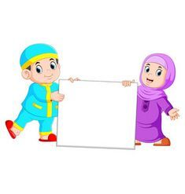

<!DOCTYPE html>
<html lang="en">
<head>
	<meta charset="UTF-8">
	<meta name="viewport" content="width=device-width, initial-scale=1.0">
	<title>Opini</title>
</head>
<body>
	
</body>
</html><!DOCTYPE html PUBLIC "-//W3C//DTD XHTML 1.0 Strict//EN" "http://www.w3.org/TR/xhtml1/DTD/xhtml1-strict.dtd">

<html xmlns="http://www.w3.org/1999/xhtml">
<head>
<meta name="keywords" content="" />
<meta name="description" content="" />
<meta http-equiv="content-type" content="text/html; charset=utf-8" />
<title>opini</title>
<link href="http://fonts.googleapis.com/css?family=Abel|Arvo" rel="stylesheet" type="text/css" />
<link href="style.css" rel="stylesheet" type="text/css" media="screen" />
<script type="text/javascript" src="http://ajax.googleapis.com/ajax/libs/jquery/1.7.1/jquery.min.js"></script>
<script type="text/javascript" src="jquery.dropotron-1.0.js"></script>
</head>
<body>
<div id="wrapper">
	<div id="header-wrapper">
		<div id="header">
			<div id="logo">
				<h1><a href="#">AKSARIA</a></h1>
				<p>Aksara Maria</p>
			</div>
		</div>
	</div>
	<!-- end #header -->
	<div id="menu-wrapper">
		<ul id="menu">
			<li><a href="home.html"><span>Homepage</span></a></li>
			<li><a href="#"><span>Cerita Pendek</span></a></li>
			<li><a href="#"><span>Sajak & Puisi</span></a>
			<ul>
				<li class="first"> <a href="puisi1.html">Tanda(?)Tanya</a> </li>
				<li class="first"> <a href="puisi2.html">1/0</a> </li>
			</ul>
			<li class="current_page_item"><a href="#"><span>Opini & Artikel</span></a>
			<ul>
				<li class="first"> <a href="op2.html">Student as The Peace Spreader and Technology</a> </li>
			</ul>
			</li>
			<li><a href="#"><span>Quotes Of The Day</span></a>
			<ul>
				<li class="first"> <a href="quotes.html">Quotes1</a> </li>
			</ul>
			<li><a href="#"><span>About</span></a></li>
			<li><a href="contact.html"><span>Contact</span></a>
			<ul>
				<li class="first"> <a href="contact.html">contact me</a> </li>
			</ul>
		</ul>
		<script type="text/javascript">
			$('#menu').dropotron();
		</script>
	</div><!D
	<!-- end #menu -->
	<div id="page">
		<div id="content">
			<div class="conten">
				<div class="post">
					<h2 class="title"><a href="#">Student as The Peace Spreader and Technology</a></h2>
					
                    <p>“Islam cinta damai</p>
                    <p>Menolak kekerasan</p>
                    <p>Pantang menebar kebencian</p>
                    <p>Santri adalah koentji”</p>
                    <p>‘Santri adalah koentji song’</p>
                    
                    <p>Based on song lyric above, Islam have known as religion which bring peace even since it was bring by our Prophet Muhammad Saw for the first time. One of media to make peace in the world that Islam used is Pesantren (Islamic Boarding School). Pesantren is a place where most of generation that upholds tolerance and brotherhood and has a high intellectual level born. </p>
                    <p>In pesantren, the students are though how to control their emotional and their ego. A student of pesantren demanded to be able to practice the knowledge that they get during they live boarding school to deliver this world back to its essence of peace, because Islam is Rahmatal Lil Aalamin.</p>
                    <p>To become a student of peace spreaders, there are several things that can we do, such as study religious knowledge, dare to socialize, and have a spirit of tolerance. With study religion knowledge we can know about how to do the true Jihad according to Islam law.</p>
                    <p>And we can make peace in this world by Islamic law by doing several things among:</p>
                    <p>a.	Propaganda, we can do propaganda not only by speech in front of publics but also, we can use Qalam. Yup, qalam that be our friend every day, we also can use it as propaganda’s media. We can use social media like via whatsapp, facebook, Instagram, twitter and so on. We can write our imagination or what we want into electronic and non-electronic media to influence the other to do good charity.</p>
                    <p>b.	Cultural acculturation and filtering. This point is also including propaganda’s media. In this globalization era, many foreign cultures that entered to Nusantara. We must be wise to face them.  We don't have to reject and antagonize foreign cultures, but we can respond them with two things, namely cultural acculturation and filtering. Combine two different cultures into an interesting thing, but we also must be able to choose which culture is appropriate and inappropriate. This is which namely cultural filtering.</p>
                    <p>Overall, technology development is very important to citizen life, even for student of pesantren. All of things in this world have their positive and negative side. So, we as nusantara’s young generation and as a student of pesantren (Ma’had) must be able to choose which good things to do and bad things to do. We must be wise person in own our life because this live is ours. What we do now, that’s what we get in the future.</p>
                    <p>Lamongan, 11 November 2017</p>
					</div>
				</div>
				<div style="clear: both;">&nbsp;</div>
			</div>
		</div>
		<!-- end #content -->
		
		<!-- end #sidebar -->
		<div style="clear: both;">&nbsp;</div>
	</div>
	<!-- end #page -->
</div>
<div id="footer">
	<p>Copyright 2020. All rights reserved. | AKSARIA</p>
</div>
<!-- end #footer -->
</body>
</html>
